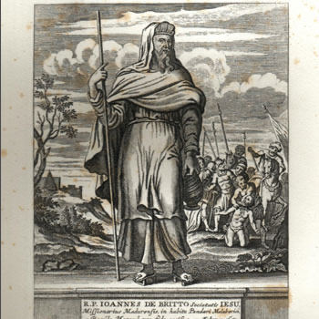

Istočnoazijski mučenici (6 svetaca)
Svećenik · Misionar · Mučenik
Sv. Ivan de Brito
Portugalski isusovac prihvatio je misionarsko poslanje u Indiji, gdje je život posvetio naviještanju kršćanske vjere. Njegov se spomen čuva među mučenicima čije je služenje povezalo europske i azijske kršćanske zajednice.

Izvor slike
- Spomendan
- 4. veljače
- Zaštitništvo
- Portugal · Biskupija Sivagangai
- Djelovanje
- Misije i evangelizacija · Progoni i progonstvo · Mučeništvo
- Razdoblje
- 17. stoljeće
- Slavi se
- 4. veljače
Životopis
Sveti Ivan de Brito ili de Britto (João Heitor de Brito), poznat i kao Arulanandar ili „portugalski Franjo Ksaverski“, portugalski isusovac, misionar i mučenik, rođen je 1. ožujka 1647. u Lisabonu, u uglednoj plemićkoj obitelji. Njegov otac Salvador de Brito Pereira bio je potkralj portugalske kolonije Brazila, a umro je 1651. João je 1662. stupio u isusovački red i studirao na glasovitom sveučilištu u Coimbri. Zaređen je za svećenika i otputovao 1673. kao misionar u Maduru (danas Madurai, južna Indija, država Tamil Nadu). Uzeo je tamilsko ime Arul Anandar. Uhićen je i zatvoren 1684, a 1687. protjeran iz Indije pa se vratio u Europu. Portugalski kralj Pedro II, njegov zaštitnik, pokušao ga je zadržati u zavičaju, ali otac de Brito vratio se 1690. u Indiju s 24 nova misionara. Djelovanje na području Madure zahtijevalo je hrabrost od tamošnjih misionara jer je to područje do tada bilo izvan europskog kulturnog utjecaja. Otac de Brito pomno je proučio indijski kastinski sustav i uvidio da većina obraćenika na kršćanstvo dolazi iz najniže kaste. Zbog toga je učio domorodačke jezike, odijevao se i živio kao hinduistički pokornik, koji se smije približiti svim kastama. Katoličku vjeru naučavao je pojmovima, shvatljivima u indijskoj tradiciji i kulturi. Takav postupak već je prije predlagao i u južnoj Indiji uspješno provodio talijanski misionar, isusovac Roberto de Nobili (1577-1656).
Otac João de Brito putovao je pješke, hranio se oskudno, spavao je malo, na golom tlu i pod otvorenim nebom. Bio je izložen mnogim opasnostima, od nevremena, zmija, divljih životinja, ali i od urođeničkih svećenika, koji se vrebali na tog velikog osvajača duša. Otac João obratio je oko 10 tisuća ljudi. Brahmani, pripadnici najviše svećeničke kaste razbjesnili su se zbog toga i odlučili su ga ubiti. Povod za njegovo uhićenje bilo je obraćenje Thadiyathevana, princa Maravara. Misionar mu je naredio da od svojih pet žena jednu zadrži, a ostale četiri otpusti. Jedna od tih otpuštenih žena bila je nećakinja tamošnjeg vladara, Kizhavana Sethupathija, kralja Maravara. Kralj je zbog toga naredio da se spale sve kršćanske crkve i opljačkaju kuće vjernika. Uhitili su oca de Brita i ostale vjeroučitelje, odveli ih u grad Ramnad, mučili ih i naredili im da napuste zemlju. Otac João je to odbio pa ga je kralj osudio 28. siječnja 1693. na smrt. Pogubljen je na današnji dan, 4. veljače 1693, u selu Oriyuru (kotar Ramanathapuram, država Tamil Nadu, južna Indija). Prije pogubljenja otac João de Brito kleknuo je i molio. Krvnik je oklijevao, a on mu je tada rekao: „Prijatelju, pomolio sam se Bogu. Što se mene tiče, učinio sam ono što sam trebao. Sada ti učini ono što moraš.“ Tada mu je krvnik odrubio glavu. Blaženim ga je proglasio 21. kolovoza 1853. papa Pio IX, a svetim 22. lipnja 1947. papa Pio XII. Zaštitnik je Portugala i biskupije Sivagangai (država Tamil Nadu). Posvećene su mu mnoge župe, crkve, kapele i učilišta u Portugalu, Indiji, Filipinima i Indoneziji.
Pročitaj više na izvornoj stranici ↗